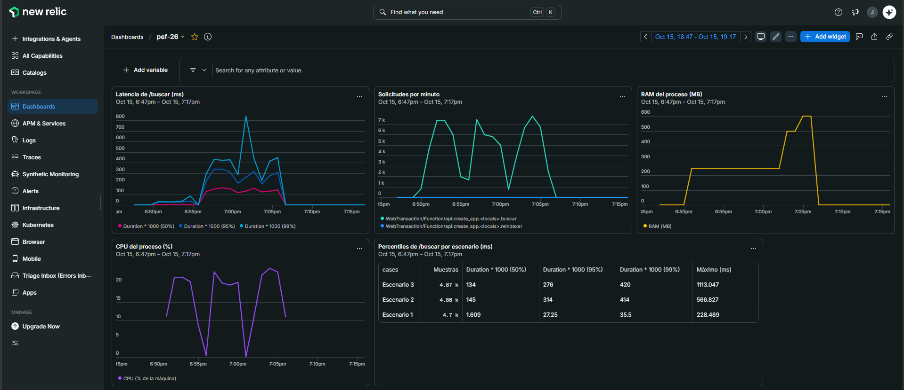
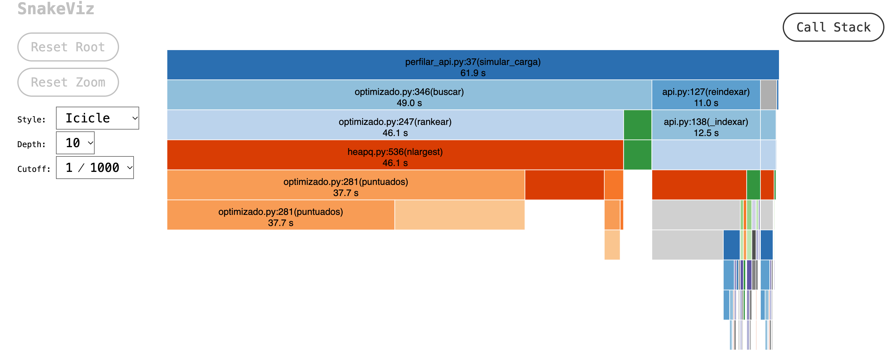
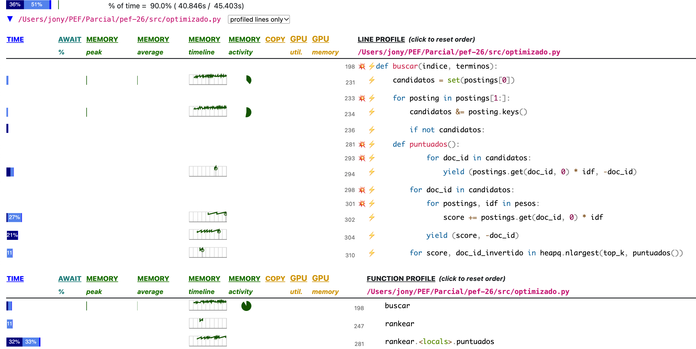
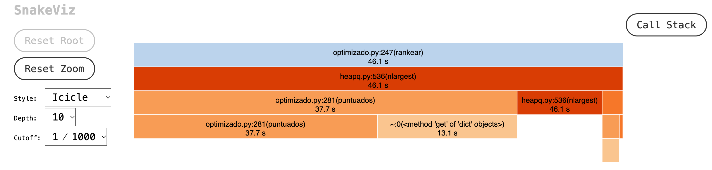
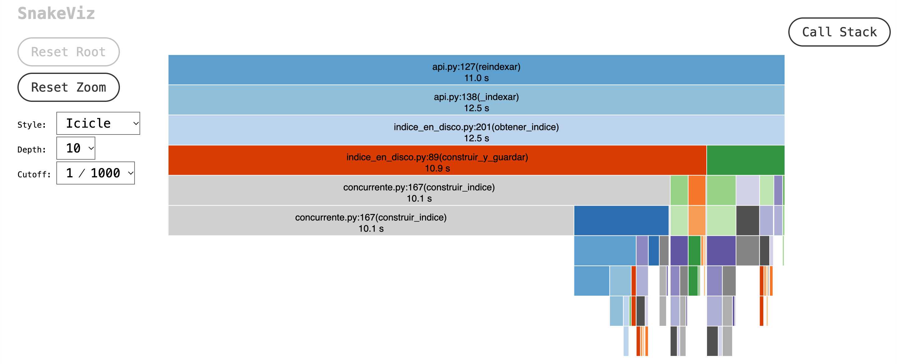

De un programa que había que correr cada vez, a un servicio web que se puede probar, revisar y medir mientras trabaja.
Con el índice invertido, el heap y la caché, una búsqueda pasó de 2,5 segundos a 8 milisegundos. Pero seguía siendo un script que se corría desde la terminal.
Si íbamos a modificar el buscador, primero tenía que ser fácil de leer y de revisar, por nosotros y por herramientas automáticas.
Ruff deja todo el código con el mismo formato (el estándar PEP 8).
Los nombres de una letra pasaron a nombres que dicen qué guardan: k → top_k.
Cada función explica qué hace, qué recibe y qué devuelve.
Sphinx lee esas explicaciones y arma una página web con la documentación de todo el código.
Si alguien agrega una función sin documentar, el control lo marca.
SonarCloud revisa cada cambio buscando errores, problemas de seguridad y código repetido.
En la parte 1 no había ningún test automático. Ahora cada cambio se prueba antes de entrar, y eso nos dejó limpiar el código sin miedo a romperlo.
| Qué se prueba | Tests | Por ejemplo |
|---|---|---|
| Texto y stemmer | 28 | "datos" y "dato" terminan siendo la misma palabra |
| Índice y búsqueda | 30 | archivos vacíos, índice en paralelo igual al de un proceso |
| Equivalencia | 3 | la versión lenta y la rápida devuelven los mismos documentos |
| Lectura de a pedazos | 21 | leer de a bloques da lo mismo que leer el archivo entero |
| Índice en disco | 10 | guardar y cargar da el mismo índice; uno dañado se descarta |
| API y servidor | 17 | respuestas, errores y New Relic con un agente de mentira |
| Carga y perfilado | 13 | el generador de tráfico y la simulación para perfilar |
Envolvimos el buscador en una API web con FastAPI: se le pregunta por HTTP y responde en JSON, sin abrir una terminal.
$ curl "http://127.0.0.1:8000/buscar?q=algoritmo&top_k=3" {"consulta": "algoritmo", "total": 47797, "resultados": [{"documento": "doc_013616.txt", "score": 0.8561}, …]}
| Pedido | Qué hace |
|---|---|
| GET /buscar?q=…&top_k=… | busca y devuelve los mejores documentos (de 1 a 100) |
| POST /reindexar | vuelve a construir el índice |
| /docs | página interactiva para probar la API desde el navegador |
Una consulta vacía o un top_k fuera de rango devuelven un error claro (422) en vez de romper el servidor.
Para saber si el corpus había cambiado, revisaba los 50.000 archivos en cada pedido. Ahora mira solo la fecha de la carpeta.
Con 8 consultas a la vez, la caché podía fallar (error 500): un hilo borraba un resultado mientras otro lo leía. Se arregló con un candado (Lock).
Antes cada archivo se cargaba completo en memoria. Con archivos chicos no se nota; con uno gigante, llena la memoria.
pedazo 1: "…buscamos el algori" ← "algori" queda guardado pedazo 2: "tmo más rápido…" ← se pega adelante: "algoritmo"
Lo mismo con las letras con tilde, que ocupan más de un byte y también se pueden cortar. Hay 21 tests que prueban pedazos de 1 a 10.000 bytes.
Cuenta exactamente las mismas palabras y tarda lo mismo, unos 5 segundos.
Se usa para armar el índice.
El pedazo 2, con lo que quedó cortado del 1 pegado adelante. En la RAM hay un solo pedazo por vez, unos 64 KiB, sea el archivo chico o gigante.
Suma lo de cada pedazo. Las palabras comunes, como «el», se descartan.
algoritmo → doc_000000: 4 dato → doc_000000: 2 red → doc_000000: 1 …
Al terminar el archivo, guarda el total.
Construir el índice de 50.000 documentos lleva varios segundos. Ahora se construye una vez, se guarda, y al arrancar se carga.
data/indice_corpus/
├── manifiesto.json
├── lote_000.json
├── lote_001.json
└── … (16 lotes)
Cada lote se guarda apenas termina, mientras los procesos siguen con los demás. El manifiesto dice de qué corpus es y qué lotes tiene.
| Formato probado | Guardar | Cargar | Tamaño |
|---|---|---|---|
| JSON (elegido) | 0,32 s | 0,69 s | 14,6 MB |
| pickle | 0,13 s | 0,49 s | 9,3 MB |
| SQLite | 2,24 s | 2,02 s | 38,5 MB |
Elegimos JSON aunque pickle carga 0,2 s más rápido: leer un pickle puede ejecutar código, y un JSON no. Además se puede abrir y leer a mano.
El índice se arma en lotes repartidos entre varios procesos, y cada lote se guarda en su archivo apenas termina. Así se viaja menos, el trabajo se reparte parejo, se guarda mientras se calcula, y un corte o un daño nunca dejan un índice roto en uso.
Parte 1 (septiembre) contra hoy, con los mismos comandos y en la misma máquina.
| Qué medimos | Parte 1 | Ahora | Resultado | Por qué |
|---|---|---|---|---|
| Tener el buscador listo para buscar | 4,7 s | ≈1 s | 4,7× más rápido | carga el índice guardado en vez de construirlo |
| Memoria para leer un archivo de 21 MB | 279 MB | 1,1 MB | 250× menos | lee de a pedazos de 64 KiB |
| Una búsqueda nueva de "algoritmo" | 9,5 ms | 11 ms * | igual | en esta parte no cambiamos cómo se calcula el ranking |
| Construir el índice con 4 procesos | 4,7 s | 6,2 s * | igual | leer de a pedazos buscaba ahorrar memoria, no tiempo; guardarlo suma 0,6 s |
| Una búsqueda repetida (sale de la caché) | 0,002 ms | 1,7 ms | no comparable | ahora pasa por el servidor web: recibir el pedido, validarlo y armar la respuesta |
| Atender a 20 usuarios a la vez | — | ≈110 / s | nuevo | búsquedas por segundo, sin un solo error |
La búsqueda sin índice no cambió ni una línea y hoy tardó 3,3 s en vez de 2,5 s (+35 %): la máquina estaba más cargada. Construir el índice subió lo mismo (+32 %), así que cuesta lo mismo que antes.
Le agregamos el agente de New Relic sin tocar el buscador y le mandamos tráfico con un generador propio.

Los tres escenarios son tres pruebas seguidas, de 4 minutos cada una. De una a la siguiente cambia una sola cosa, así se sabe qué provocó cada diferencia:
| Escenario | Usuarios | Recarga |
|---|---|---|
| 1 | 1 | no |
| 2 | 20 | no |
| 3 | 20 | cada 60 s |
.env que no se sube al repositorio.La API es como un banco con un solo cajero, porque usa un solo núcleo del procesador:
Con 20 usuarios a la vez, el servidor atiende la misma cantidad de búsquedas por segundo que con uno solo.
| Escenario | Búsquedas / s | Mitad tarda menos de | La más lenta |
|---|---|---|---|
| 1 usuario | 116 | 1,6 ms | 228 ms |
| 20 usuarios | 107 | 145 ms | 567 ms |
| 20 usuarios + recargas | 117 | 134 ms | 1.113 ms |
New Relic mide desde que el pedido entra a la aplicación; el generador, todo lo que espera el usuario. La diferencia es la parte de la fila que se forma antes de entrar, donde New Relic no mide.
| Escenario | Servidor (New Relic) | Cliente | Diferencia |
|---|---|---|---|
| 1 usuario | 1,6 ms | 3,0 ms | 1,4 ms |
| 20 usuarios | 145 ms | 169,4 ms | 24,4 ms |
| 20 usuarios + recargas | 134 ms | 155,6 ms | 21,6 ms |
Python deja que un solo hilo haga cuentas a la vez (el GIL). Los 20 usuarios hacen fila: la CPU del proceso no pasó del 25 %, que es un núcleo de los cuatro.
Si atiende 107,5 por segundo y hay 20 esperando, cada uno espera 20 ÷ 107,5 = 186 ms. El generador midió 185,8 ms.
En la primera corrida atendió 136,3 por segundo: 20 ÷ 136,3 = 147 ms, y el generador midió 146,6 ms. Aunque el ritmo cambió, la explicación se cumplió en las dos.
Otro integrante repitió el monitoreo en una PC con Windows 11, con otras pruebas. Comparamos lo que se puede comparar.
| Medido dentro del servidor | Mac | Windows |
|---|---|---|
| Búsqueda repetida (caché) | 1,6 ms | 1,7 ms |
| Búsqueda nueva | ≈23 ms | 20,8 ms |
| Recarga del índice, sola | 7 a 9 s | 3,0 s |
| Recarga con 20 usuarios buscando | ≈16 s | — |
| Errores | 0 de 81.979 | 14.306 provocados, todos detectados |
Mac: en la búsqueda repetida, la mitad de las búsquedas de un usuario (casi todas desde la caché); en la nueva, medido con el perfilado, sin HTTP.
Es la nota de satisfacción de New Relic, con un umbral de 0,5 s. En la Mac, /reindexar dio 0: esperable para una tarea de mantenimiento de 16 s. En Windows bajó a 0,46 por los 422 que provocamos a propósito. Ninguno indica que la API ande mal. Propuesta: marcar los 422 como errores esperados, para que el Apdex muestre solo problemas reales.
Mac: carga con muchos usuarios, CPU y RAM. Windows: la caché (12 veces más rápida), los errores clasificados por causa y el Apdex.
New Relic mostraba que /reindexar tardaba 16 s, pero el 98,9 % quedaba en una sola función, sin más detalle.

La API atiende cada búsqueda en un hilo aparte, y cProfile solo mide el hilo donde arranca.
Por eso hicimos perfilar_api.py: el mismo trabajo que la API, en un solo proceso y sin HTTP.
SnakeViz dibuja quién llama a quién y cuánto tarda. Scalene va línea por línea y separa CPU y memoria.
El corpus tiene solo 39 palabras y casi todas aparecen en casi todos los documentos: cruzar las listas casi no descarta nada.


puntuados (37,7 de 46,1 s).Son 23 ms de cuentas en Python sin soltar el GIL: un proceso no puede hacer más de unas 45 búsquedas nuevas por segundo, con cualquier cantidad de usuarios.
score += postings.get(doc_id, 0) * idf, una consulta a un diccionario por cada documento y cada palabra. Línea 304: entregar cada resultado al heap.SnakeViz muestra 10 s en construir_indice y debajo casi nada: el trabajo lo hacen los procesos hijos. Lo medimos aparte con un script.

construir_indice es lo que cProfile no ve.Un hallazgo chico: ordenar las rutas como objetos Path tarda 0,48 s; ordenarlas por nombre, 0,17 s.
scripts/medir_recarga.py: cronometra lo que hace el proceso padre y perfila un lote dentro del padre para ver qué hacen los hijos. Está en el repositorio para que cualquiera repita los números.Ninguna de estas mejoras está hecha todavía: son lo que el perfilado nos dice que conviene hacer después.
| Cuello de botella | Cuánto pesa | Cómo atacarlo |
|---|---|---|
| El ranking de las búsquedas nuevas | 53 % del tiempo en dos líneas; techo de 45 búsquedas nuevas por segundo | Guardar en el índice el puntaje ya calculado, cortar el ranking antes, o probar PyPy, un compilador que acelera justo este tipo de bucles. Para el techo de un núcleo: varios procesos de Uvicorn. |
| Tokenizar durante la recarga | 62 % de cada lote, unos 7 s de CPU por recarga | Resolver cada palabra con una sola consulta a la caché, en vez de tres pasos por palabra. |
Ordenar las rutas como Path | 0,48 s por recarga | Ordenarlas por nombre: 0,17 s. |
| La recarga compite con las búsquedas | 7 a 9 s sola, 16 s con 20 usuarios | Recargar con menos procesos mientras la API atiende, o en momentos tranquilos. |
Memoria a cambio de capacidad. Es una estimación: falta medirlo.
Era la herramienta para ver la API real completa, con los procesos hijos y el framework.
En la Mac no logró engancharse al proceso, ni con sudo ("No such process"). Descartamos la versión y la firma de Python como causa. Lo documentamos y lo sacamos.
Ni cProfile ni Scalene ven lo que hacen los procesos hijos, y lo que agrega HTTP queda afuera de la simulación.
Por eso la recarga se midió con un script aparte, que quedó en el repositorio.
El servidor y el generador de carga compartieron 2 núcleos: cualquier otro programa abierto mueve los números.
La misma campaña, corrida dos veces el mismo día, dio 136 y 107 búsquedas por segundo. La conclusión fue la misma en las dos.
Los datos llegaban como «Python Application»: el agente lee el nombre al importarse. Se corrigió el orden y se agregó un test.
Las primeras llegaron antes de que el agente se conectara. Se arregla con NEW_RELIC_STARTUP_TIMEOUT.
Seleccionar texto en la consola congeló el servidor. New Relic lo registró como una traza lenta.
Abría una conexión por búsqueda y agotó los 16.384 puertos de Windows. Se arregló reusando las conexiones.
$ python src/servidor.py --env-file .env New Relic: activo (app pef-26) INFO: Uvicorn running on http://127.0.0.1:8000
$ curl "http://127.0.0.1:8000/buscar?q=algoritmo&top_k=3" $ python src/generar_trafico.py --duracion 60 --concurrencia 20
$ python src/perfilar_api.py --reindexar --cprofile profiles/cprofile-api.prof $ snakeviz profiles/cprofile-api.prof
POST /reindexar y la RAM subiendo mientras se reconstruye.